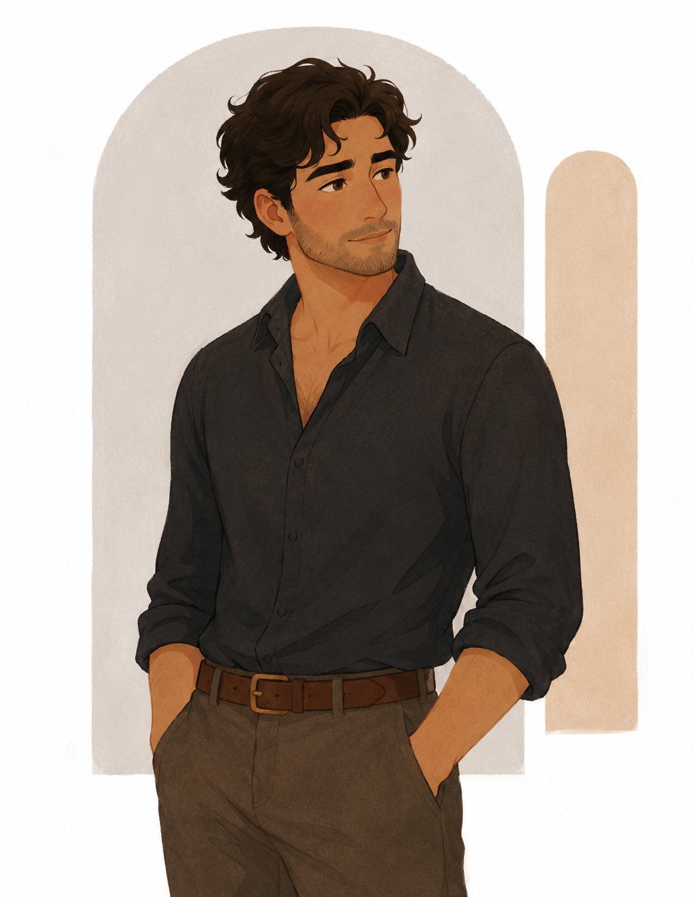

O PAI DA FAMÍLIA
Kayden
Um pai diante de descobertas e desafios. Entre responsabilidades, escolhas e dificuldades, Kayden precisará enfrentar acontecimentos que poderão mudar o destino de sua família.